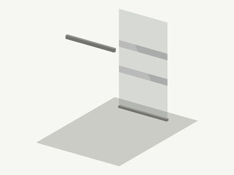

shelter_bay/d20: Bus stop shelter bay / d20
Reference placeholder (Spec 020, awaiting sign-off) Architect reference placeholder geometry (not final art). Bus-stop furniture category awaits the owner's sign-off.
Spec 020 Architect reference placeholders r3-final (not final art)


| Id | shelter_bay/d20 |
|---|---|
| Name | Bus stop shelter bay / d20 |
| Category | 3D street furniture |
| Group | Spec 020 bus stop kit (gf.module.bus_stop_ref v0.0.5) |
| Slot | kit/street_furniture/bus_stop/shelter_bay/d20 |
| Pack | gf.module.bus_stop_ref v0.0.5 |
| LODs | lod0: shelter_bay__d20_lod0.glb, lod1: shelter_bay__d20_lod1.glb, lod2: shelter_bay__d20_lod2.glb |
| Diagram ref / source page | gf.module.bus_stop_ref.gfkit (Spec 020 r3-final) |
| Licence | CC0-1.0 (GridForge original) |